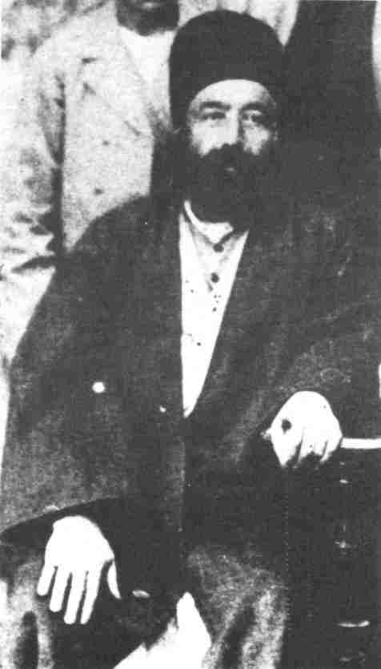

'For the Advancement of the World'Lawh-i-Dunyá
Áqá Mírzá Áqáy-i-Afnán (Núru'd-Dín) This Tablet* was revealed in 1891 in honour of Áqá Mírzá Áqáy-Afnán, entitled Núru'd-Dín. His mother was a sister of Khadíjih Bagum, the wife of the Báb,† and Áqá Mírzá Áqá was born two years before His Declaration. In a Tablet to His wife revealed in the prison of Máh-Kú the Báb assures her that when Áqá Mírzá Áqá reaches the age of maturity he will be her helper and protector. These prophetic words of the Báb were fulfilled, for Áqá Mírzá Áqá dedicated his life to the service of his beloved aunt, whom he revered and served with unbounded devotion. Khadíjih Bagum lovingly taught him the Faith and at the age of thirteen Áqá Mírzá Áqá recognized the truth of the Mission of the Báb. It was through his efforts that Hájí Mírzá Siyyid Muhammad, the eldest maternal uncle of the Báb, went to meet Bahá'u'lláh in Baghdád and as a result became the recipient of the Kitáb-i-Íqán which assured him of the truth of the Báb's Revelation. Soon after His Declaration near Baghdád‡ Bahá'u'lláh sent Nabíl-i-A'zam to Persia to announce the momentous news to the Bábís. Nabíl went to the home of Áqá Mírzá Áqá, and announced the joyful tidings to the believers in Shíráz. Áqá Mírzá Áqá |
* The full text revealed in Persian has been translated into English and is published in Tablets of Bahá'u'lláh, pp. 83-97. † For some details of her noble life see vol. 2, pp. 382-7. ‡ For details see vol. 1, pp. 153-9. [Lawh-i-Dunyá] God Passes By, p. 216 |
|
|
immediately gave his allegiance to Bahá'u'lláh and considered himself a humble servant at His threshold. On one occasion the wife of the Báb, who was seated behind a curtain, heard Nabíl inform the friends that the Blessed Beauty was the Promised One of the Bayán, 'Him Whom God shall make Manifest'. No sooner did that noble woman hear this announcement than she put her forehead to the ground in adoration of her newly-found Lord and is reported to have whispered to her nephew: 'offer at His sacred threshold my most humble devotion.' Thus the bonds of love and adoration which had united these two became strengthened through their immediate response to the Cause they had both spontaneously espoused. From the early days Áqá Mírzá Áqá became the recipient of many favours and bounties from Bahá'u'lláh. The custodianship of the House of the Báb, which was conferred upon the wife of the Báb and her sister, also included him and his descendants.* In 1879 Áqá Mírzá Áqá moved to India and established a trading business in Bombay. A few years later, in 1887, he travelled to Egypt and Beirut where he stayed for some time in the home of his maternal uncle Hájí Mírzá Siyyid Hasan, known as Afnán-i-Kabír (the Great Afnán).† In Beirut he and his eldest son Áqá Siyyid Áqᇠreceived permission to visit Bahá'u'lláh. They both attained His presence for the first time on the anniversary of the Báb's Declaration which that year coincided with 20 January 1888.§ Bahá'u'lláh bestowed unbounded blessings upon them. He is reported to have honoured them by ordering His servant to place a fur-lined overcoat on the shoulders of each as they were sitting in His presence. ø
|
* For details see Appendix 2. † see below, pp. 404-6. ‡ see above, pp. 284-5. § In the East the Declaration of the Báb is celebrated according to the lunar calendar. Since there are eleven days' difference between the lunar and the solar calendars, the dates are different each year. ø In the absence of central heating a room was usually heated by charcoal burning in a small brazier. It was a mark of respect to place a fur coat or similar clothing around the shoulders of an honoured guest to keep him warm. |
|
With Bahá'u'lláh's approval Áqá Mírzá Áqá and his eldest son proceeded to Port Said and established a business there. Each year he was permitted to go to the Holy Land where he attained the presence of Bahá'u'lláh. He went in 1889, 1890 and 1891. His last visit was the most memorable as he stayed for nine months and was accompanied by his family; they preceded him to Haifa and arrived on 17 July 1891 when Bahá'u'lláh was staying at the foot of Mount Carmel on his last visit to that spot. The party consisted of Áqá Mírzá Áqá's wife, four of their sons, and their only daughter. Áqá Mírzá Áqá himself joined his family fifteen days later when his eldest son returned to Port Said. One of his sons Hájí Mírzá Habíbu'lláh, who was then fifteen years of age, has recorded in his memoirs some interesting anecdotes of their pilgrimage. The following are extracts from his notes summarized and translated:
When the ship reached Haifa the very thought of prostrating ourselves at His threshold and attaining His presence which the Prophets and His chosen ones had wished to attain invoked such eagerness and excitement in our hearts that with tears streaming down our cheeks, we were transported into a different world. We arrived at a spot where the souls of all the Manifestations of God were circumambulating day and night around His Blessed Person. My eldest brother, Áqá Siyyid Áqá, who had previously attained the presence of Bahá'u'lláh, taught us how to conduct ourselves in that holy presence with absolute humility, servitude and utter self-effacement... |
* The location where Bahá'u'lláh pitched His tent has been preserved and is owned by the Bahá'í World Centre. (A.T.) † Bahá'u'lláh at that time stayed in a house not far from the tent. (A.T.) |
|
Grandeur addressed us in these words, 'O flowers of the rose-garden of Jináb-i-Afnán,* you are welcome. Your journey from Shíráz was very difficult. The will of God and the efforts of Jináb-i-Afnán enabled you to attain to this Most Holy Threshold...' |
* Áqá Mírzá Áqá. (A.T.) † see below, pp. 347-50. (A.T.) ‡ Literally, 'Branches'. A designation used by Bahá'u'lláh to refer to His male descendants. (A.T.) |
|
ourselves and kissed His feet. Upon each one of us He showered His bounties. He entered our home and conferred upon us everlasting honour. I brought a cup of tea for Him. He drank half of it and gave me the rest. He also gave me a black rosary made of olive wood which He was holding in His hands. I kissed His hands. I loved that rosary as my own life and have left it in the archives of the House of the Báb in Shíráz. |
* Pens were made of bamboo reeds and had to be cut to make a nib for them. For more information see vol. 1, p. 35. (A.T.) † The birth of the Báb occurred on the 1st of Muharram, AH 1235, according to the lunar calendar. The birth of Bahá'u'lláh occurred on the second day of the same month, AH 1233. These two days Bahá'u'lláh has ordained to be considered as one festival. (A.T.) ‡ In the East it was not customary at the time to sit on chairs. (A.T.) |
|
exalted Herald was born, and illumined the whole world with the brightness of His light. This is the time of rejoicing.'* And then He dismissed all from His presence. After this the believers could be seen standing in small groups close to the Mansion near the pine trees, repeating the words of the Blessed Perfection to each other so as to commit them to memory. |
* These are not the exact words of Bahá'u'lláh, but the recollections of the chronicler. (A.T.) † The caution referred to above relates to the celebration of the birth of the Báb and Bahá'u'lláh on consecutive days of the month of Muharram. Because this month is the month of mourning for Shí'ah Islám, Bahá'u'lláh had advised His followers to exercise great caution in celebrating these festivals lest their enthusiasm and rejoicing upset the Muslims and inflame further their animosity towards the Faith. (A.T.) |
|
engaged in prayers and devotions. Before sunrise we all assembled outside the gate of the Mansion. It took about one hour until His Blessed Person came downstairs and mounted a white donkey...All the believers followed Him on foot to the garden. One of the local believers, Hájí Khávar, was a tall man. He walked alongside Bahá'u'lláh and held an umbrella over His head as a protection against the heat of the sun. The air was refreshing as we arrived in the garden...His Blessed Person was extremely happy that day and each one of the friends received his share of the bounties from His presence. We had lunch in the garden, then we assembled together and attained His presence.Áqá Mírzá Áqá and his family basked in the sunshine of Bahá'u'lláh's presence for nine months. When the time came to |
* These are not to be taken as the exact words of Bahá'u'lláh or 'Abdu'l-Bahá. (A.T.) |
|
|
depart they were all plunged into deepest sorrow. But Bahá'u'lláh showered His blessings upon them and they left His presence. On the day of their departure Maryam Sultán Bagum, the beloved wife of Áqá Mírzá Áqá, attained the presence of Bahá'u'lláh to pay her last homage to Him. She is reported to have kissed the hands of Bahá'u'lláh and made a wish that He might give her the ring He was wearing on His finger as a token of blessing for her family. She did not, however, express her wish. She then went to say farewell to the Greatest Holy Leaf, the daughter of Bahá'u'lláh. While she was there, one of the maids of the household brought Bahá'u'lláh's ring and said to Maryam Sultán Bagum, 'The Blessed Beauty has given this for you.' Circumstances of the Revelation of the Lawh-i-Dunyá The Lawh-i-Dunyá was revealed in Haifa, and a copy handed by Bahá'u'lláh to Hájí Mírzá Buzurg, the son of Áqá Mírzá Áqá in whose honour it was revealed. This Tablet dates from the time when the Hand of the Cause of God Mullá 'Alí-Akbar and the Trustee of Bahá'u'lláh, Hájí Abu'l-Hasan-i-Amín* were both imprisoned in Qazvín. Bahá'u'lláh bestows His bounties upon the two in the opening paragraph of this Tablet:
Praise and thanksgiving beseem the Lord of manifest dominion Who hath adorned this mighty Prison with the presence of their honours 'Alí Akbar and Amín, and hath illumined it with the light of certitude, constancy and assurance. The glory of God and the glory of all that are in the heavens and on the earth be upon them. |
* Hájí Amín was posthumously designated a Hand of the Cause of God by Shoghi Effendi, the Guardian of the Faith. |
|
Lord of mankind, hath been diffused. We beseech Him--Exalted is he--to shield them through the power of His hosts, to protect them through the potency of His dominion and to aid them through His indomitable strength which prevaileth over all created things. Sovereignty is God's, the Creator of the heavens and the Lord of the Kingdom of Names.1The 'mighty Prison' is the prison of Qazvín. As already mentioned earlier (p. 306) a group of political agitators were imprisoned by the Persian government in 1891. Three eminent Bahá'ís, Ibn-i-Abhar, Mullá 'Alí-Akbar and Hájí Amín were also cast into prison at the same time in order to appease the enemies of the Cause, by order of Kámrán Mírzá the Náyibu's-Saltanih, the Governor of Tihrán. The last two were put in chains and taken to the prison of Qazvín where they remained for eighteen months in chains and fetters;* afterwards they were transferred to the prison of Tihrán. Mullá 'Alí-Akbar was released after six months while Hájí Amín's imprisonment was prolonged further; he was released after the ascension of Bahá'u'lláh. Bahá'u'lláh's Counsels to His Followers In the Tablet of Dunyá Bahá'u'lláh reiterates some of His choicest exhortations and counsels:
Every man of insight will, in this day, readily admit that the counsels which the Pen of this Wronged One hash revealed constitute the supreme animating power for the advancement of the world and the exaltation of its peoples. Arise, O people, and, by the power of God's might, resolve to gain the victory over your own selves, that haply the whole earth may be freed and sanctified from its servitude to the gods of its idle fancies--gods that have inflicted such loss upon, and are responsible for the misery of their wretched worshippers. These idols form the obstacle that impedeth man in his efforts to advance in the path of perfection. We cherish the hope that |
* They were photographed wearing these chains, see vol. 3, facing p. 61.
1. Tablets of Bahá'u'lláh, p. 83. |
|
the Hand of divine power may lend its assistance to mankind and deliver it from its state of grievous abasement...Because the 'Most Great Spirit' of God speaks to mankind through Bahá'u'lláh, we find that every word revealed by Him is an exhortation to goodly deeds; for this reason it is impossible to find a single word in any of His Writings from which the odour of mischief may be inhaled. God never advocates wrongdoing. Indeed, one of the best ways by which the truth of the Revelation of Bahá'u'lláh may be ascertained is for the seeker to study the teachings and counsels of the Most Exalted Pen. In doing so, he will find nothing but praiseworthy exhortations and divine guidance. In the Lawh-i-Dunyá Bahá'u'lláh addresses His followers in these words, 'O people of God! Do not busy yourselves in your own concerns; let your thoughts be fixed upon that which will rehabilitate the fortunes of mankind and sanctify the hearts and souls of men.' He states that this can be achieved 'through a virtuous life and a goodly behaviour', reminds the believers that what ensures 'the triumph of this Cause' is a 'saintly character', forbids His loved ones 'to engage in contention or conflict', exhorts them 'to righteous deeds and praiseworthy character', admonishes them 'to observe courtesy' which He describes as 'the prince of virtues', and counsels them in these words:
O people of Justice! Be as brilliant as the light and as splendid as the fire that blazed in the Burning Bush. The brightness of the fire of your love will no doubt fuse and unify the contending peoples and kindreds of the earth, whilst the fierceness of the flame of enmity and hatred cannot but result |
2. Tablets of Bahá'u'lláh, pp. 86, 89. |
|
in strife and ruin. We beseech God that He may shield His creatures from the evil designs of His enemies. He verily hath power over all things.3One of the distinguishing features of this great Revelation, which was not possible to achieve in previous Dispensations is the establishment of unity among people. Disunity has been and still is the hallmark of the old order. The Revelation of Bahá'u'lláh has vouchsafed to humanity the priceless gift of unity. These words are revealed in the Lawh-i-Dunyá:
We have erewhile declared--and Our Word is the truth--: 'Consort with the followers of all religions in a spirit of friendliness and fellowship.' Whatsoever hath led the children of men to shun one another, and hath caused dissensions and divisions amongst them, hath, through the revelation of these words, been nullified and abolished. From the heaven of God's Will, and for the purpose of ennobling the world of being and of elevating the minds and souls of men, hath been sent down that which is the most effective instrument for the education of the whole human race...of old it hath been revealed: 'Love of one's country is an element of the Faith of God.' The Tongue of Grandeur hath, however, in the day of His manifestation proclaimed: 'It is not his to boast who loveth his country, but it is his who loveth the world.' Through the power released by these exalted words He hath lent a fresh impulse and set a new direction to the birds of men's hearts, and hath obliterated every trace of restriction and limitation from God's holy Book.4In many of His Tablets Bahá'u'lláh has admonished His loved ones to protect themselves against the influence exerted by the wicked and the ungodly. 'Eschew all fellowship with the ungodly' 5 is Bahá'u'lláh's counsel in His Hidden Words. In the Lawh-i-Dunyá Bahá'u'lláh clearly defines who the ungodly are. 'The Evil One', He states, 'is he that hindereth the rise and obstructeth the spiritual progress of the children of men.' 6 One of the most wonderful counsels revealed by the Pen of the Most High is the following in the Lawh-i-Dunyá.
|
3. Tablets of Bahá'u'lláh, p. 88. 4. ibid. pp. 87-8. 5. Persian no. 3. 6. Tablets of Bahá'u'lláh, p. 87. |
|
We have ere this uttered these sublime words: Let them that bear allegiance to this Wronged One be even as a raining cloud in moments of charity and benevolence and as a blazing fire in restraining their base and appetitive natures.7In this Tablet Bahá'u'lláh promulgates some of His Teachings aimed at the reconstruction of human society. These mostly reiterate teachings previously revealed, such as the establishment of an international language, promotion of fellowship among all peoples, and the education of children. He attaches great importance to agriculture, recommends the establishment of constitutional government, condemns the actions of the 'unbelievers and the faithless'--an allusion to the enemies of the Faith in Persia--who 'have set their minds' on 'the shedding of blood', 'the burning of books', 'the shunning of the followers of other religions' and 'the extermination of other communities and groups'. He reproaches the Shí'ah sect of Islám for their 'foul imprecations' when they 'invoke the word Mal'ún (accursed)--uttered with a guttural sound of the letter ayn'.* He beseeches God, however, to 'guide aright' these people, and 'to purge them of unseemly conduct'. He further expresses astonishment at the people of Persia, for it was reported to Him that 'a certain person went to the seat of the imperial throne in Persia and succeeded in winning the good grace of some of the nobility by his ingratiating behaviour'. This is a reference to Siyyid Jamálu'd-Din-i-Afghání, a brief outline of whose notorious activities is given elsewhere in this book.† In the Lawh-i-Dunyá Bahá'u'lláh calls on the ministers of the House of Justice 'to promote the Lesser Peace...' Although the Universal House of Justice is not yet fully known to mankind, it |
* Cursing is a common practice among the Persians, especially among the clergy who pride themselves in pronouncing a person to be Mal'ún (accursed) with a guttural sound of the letter 'U'. By doing so, not only has the clergy put a curse on someone, but by pronouncing the letter 'U' with a guttural sound he proudly puts himself in the category of a scholar of the Arabic language. Thus he makes a great impression upon the untutored multitude who never know how to use a guttural sound and are lost in admiration for one who does. † see below, pp. 401-2.
7. Tablets of Bahá'u'lláh, p. 94. |
|
|
has found it timely to initiate this process. It has taken the initial steps in the promotion of the Lesser Peace by issuing an open letter entitled The Promise of World Peace and addressed to the peoples of the world. It points out the obstacles in the path of peace, delineates the features of a lasting peace, affirms the inevitability of its establishment, outlines the way for its achievement and pledges unremitting support for its promotion by the Bahá'í community throughout the world. In the Lawh-i-Dunyá Bahá'u'lláh again pays tribute to those men of learning who are detached from the things of this world and engaged in the guidance of other souls. He bestows His blessings upon them in these words:
O people of God! Righteous men of learning who dedicate themselves to the guidance of others and are freed and well guarded from the promptings of a base and covetous nature are, in the sight of Him Who is the Desire of the world, stars of the heaven of true knowledge. It is essential to treat them with deference. They are indeed fountains of soft-flowing water, stars that shine resplendent, fruits of the blessed Tree, exponents of celestial power, and oceans of heavenly wisdom. Happy is he that followeth them. Verily such a soul is numbered in the Book of God, the Lord of the mighty Throne, among those with whom it shall be well.8Hájí Muhammad-Ridáy-i-Isfahání There is a passage in this Tablet which may not be apparent to some as being a reference to the martyrdom of Hájí Muhammad-Ridáy-i-Isfahání. Bahá'u'lláh describes this episode with great feeling:
Day and night this Wronged One yieldeth thanks and praise unto the Lord of men, for it is witnessed that the words of counsel and exhortation We uttered have proved effective and that this people hath evinced such character and conduct as are acceptable in Our sight. This is affirmed by virtue of the event which hath truly cheered the eye of the world, and is none |
8. Tablets of Bahá'u'lláh, pp. 96-7. |
|
other than the intercession of the friends with the high authorities in favour of their enemies.9Hájí Muhammad-Ridá was originally from the province of Khurásán, but lived in Isfahán and worked as a merchant. He was a devoted believer and a very active teacher of the Cause. Because of his teaching activities he was put in prison, but was released after some time. He then left Isfahán and eventually went to 'Akká and attained the presence of Bahá'u'lláh. Coming into contact with the Person of Bahá'u'lláh was the cause of igniting within his heart the fire of love and devotion for his Lord. He begged Him to accept him as a martyr and enable him to lay down his life in His path. Bahá'u'lláh is reported to have told him that it was not necessary, as many souls had already sacrificed their lives in His path. But Hájí Muhammad-Ridá was so intoxicated with the wine of Bahá'u'lláh's presence that he wanted to give his all to his Beloved. So he repeated his plea. This time the Blessed Beauty remained silent and he took it as a sign of consent. Later he asked Bahá'u'lláh to assign for him a city to reside in. He was bidden to proceed to 'Ishqábád. He lived there for several years and was engaged in teaching the Cause among the Muslim population. On 1 July 1889 Hájí Muhammad-Ridá received a Tablet10 from Bahá'u'lláh in which He praises him for his devoted services, bestows His blessings upon him for his steadfastness and devotion to the Cause, and assures him that all his deeds and aspirations are manifest before Him. He further states that a grievous upheaval has occurred in the city of Ishqábád and describes it as the attack of a serpent upon one who is the recipient of the bounties of His Lord. Although the identity of the believer who was the target is not disclosed by Bahá'u'lláh, He prays for Hájí Muhammad-Ridá that God may give strength to his body and assurance to his heart. This Tablet arrived at a time when Hájí Muhammad-Ridá had invited all the believers of 'Ishqábád to a feast. When it was read out to the friends, Mírzá Abu'l-Fadl explained that although |
9. Tablets of Bahá'u'lláh, pp. 90-91. 10. Ustád 'Alí-Akbar-i-Banná, unpublished history of 'Ishqábád. |
|
|
no upheaval had taken place so far in 'Ishqábád, since Bahá'u'lláh has used the past tense and clearly indicated that one of the believers had been struck down by the enemies, it was an absolute certainty that this upheaval was inevitable. It would happen soon and only one person would be martyred. Hájí Muhammad-Ridá said to the friends that he believed that he was the believer whose martyrdom Bahá'u'lláh had foretold in this Tablet. And this happened two months later. Incensed by the remarkable progress of the Faith in 'Ishqábád, the Shí'ah Muslim community had been secretly planning to assassinate a number of believers. Although their plan did not materialize, they succeeded in murdering Hájí Muhammad-Ridá. Two men armed with daggers attacked him in the bazaar and stabbed him to death. This was on the morning of 8 September 1889. It is reported that they stabbed him thirty-two times amid the jubilation of a great number of people who had gathered to watch him die. Some of the believers attributed the prayers revealed by Bahá'u'lláh in the Tablet he had received, which beseeched God to give strength to his body, as an indication of the agonizing and torturous way in which he was to be martyred. The murderers were so bloodthirsty that they were seen licking their daggers which were dripping with blood, until the Russian police arrived and took them into custody. On discovering the plot, which had been intended to kill a number of prominent Bahá'ís, the believers sent a petition to General Komaroff, the Governor-General of Transcaspia, and appealed for protection. This was granted to them and in this way the enemies' plans were frustrated. A prolonged investigation was conducted in the law courts where, in the presence of spectators, many Bahá'ís and non-Bahá'ís were questioned. At the end the court delivered the verdict of guilty and sentence was pronounced. The two murderers were to be executed by hanging, and a few men accessory to the crime were to be exiled to Siberia. This was the first time in the history of the Faith that those responsible for killing a Bahá'í had been brought to justice. The verdict infuriated the Shí'ah clergy in Persia, who were in the |
Martyr of the Faith in 'Ishqábád in 1889 |
|
habit of decorating the murderers of the Bahá'ís. They made desperate attempts to free the criminals, but did not succeed in influencing the Russian government. In the meantime, while the prisoners were behind bars awaiting their execution, a number of their relatives accompanied by a few leading merchants visited some prominent Bahá'ís and begged them to intercede with the government for the commuting of the death sentence. The Bahá'ís held a meeting, consulted and decided to take action. Mírzá Abu'l-Fadl and another believer made representations to the Governor on behalf of the Bahá'í community and interceded with the government, in the first place to absolve the murderers of their crime, and if not possible to mitigate their sentences. The Governor was deeply impressed by the attitude of the Bahá'ís and their willingness to forgive the assassins. This request was passed on to the Czar, who approved the commuting of the sentences. But the decision was kept a secret and only revealed dramatically at the last moment. On the execution day gallows were erected and graves dug. The prisoners dressed in white robes and ready for execution were brought out of the prison and led to the scaffold. When the moment arrived a government official, in the presence of great multitudes, read out a proclamation announcing that as a result of the intercession of the Bahá'ís with the government requesting pardon for their enemies, His Majesty the Czar had commuted the sentences of the two murderers to life imprisonment in Siberia, and halved the sentences of the others. This act of intercession on behalf of their enemies was acclaimed by Bahá'u'lláh as a princely deed. It brought great satisfaction to His heart that through His counsels and exhortations for well-nigh forty years, the believers had at last risen to such heights of faith as to intercede for the release of those who were their deadly enemies. The Tyrant of Yazd In the Lawh-i-Dunyá Bahá'u'lláh states:
|
||
The tyrant of the land of Yá {Yazd}, committed that which hath caused the Concourse on High to shed tears of blood.11He was Prince Mahmúd Mírzá the Jalálu'd-Dawlih, Governor of Yazd. Bahá'u'lláh is referring to the martyrdom on his orders of seven believers known as the first seven martyrs of Yazd. This heinous crime took place on 19 May 1891; the news reached Bahá'u'lláh when He was staying in Haifa. He withheld the Revelation of His words for nine days, and during this period no one was admitted into His presence. The first Tablet which was revealed after this lapse of nine days was the Lawh-i-Dunyá. The details of the martyrdom of these seven is given in the Táríkh-i-Shuhadáy-i-Yazd (the History of the Martyrs of Yazd), and Shoghi Effendi in his masterly fashion has summarized it as follows:
In Yazd, at the instigation of the mujtahid of that city, and by order of the callous Mahmúd Mírzá, the Jalálu'd-Dawlih, the governor, a son of Zillu's-Sultán, seven were done to death in a single day in horrible circumstances. The first of these, a twenty-seven year old youth, 'Alí-Asghar, was strangled, his body delivered into the hands of some Jews who, forcing the dead man's six companions to come with them, dragged the corpse through the streets, surrounded by a mob of people and soldiers beating drums and blowing trumpets, after which, arriving near the Telegraph office, they beheaded the eighty-five year old Mullá Mihdí and dragged him in the same manner to another quarter of the city, where, in view of a great throng of onlookers, frenzied by the throbbing strains of the music, they executed Áqá 'Alí in like manner. Proceeding thence to the house of the local mujtahid, and carrying with them the four remaining companions, they cut the throat of Mullá 'Alíy-i-Sabzivárí, who had been addressing the crowd and glorying in his imminent martyrdom, hacked his body to pieces with a spade, while he was still alive, and pounded his skull to a pulp with stones. In another quarter, near the Mihríz gate, they slew Muhammad-Báqir, and afterwards, in the Maydán-i-Khán, as the music grew wilder and drowned the yells of the people, they beheaded the survivors who |
11. Tablets of Bahá'u'lláh, p. 85. |
|
remained, two brothers in their early twenties, 'Alí-Asghar and Muhammad-Hasan. The stomach of the latter was ripped open and his heart and liver plucked out, after which his head was impaled on a spear, carried aloft, to the accompaniment of music, through the streets of the city, and suspended on a mulberry tree, and stoned by a great concourse of people. His body was cast before the door of his mother's house, into which women deliberately entered to dance and make merry. Even pieces of their flesh were carried away to be used as a medicament. Finally, the head of Muhammad-Hasan was attached to the lower part of his body and, together with those of the other martyrs, was borne to the outskirts of the city and so viciously pelted with stones that the skulls were broken, whereupon they compelled the Jews to carry the remains and throw them into a pit in the plain of Salsabíl. A holiday was declared by the governor for the people, all the shops were closed by his order, the city was illuminated at night, and festivities proclaimed the consummation of one of the most barbarous acts perpetrated in modern times.12Some years later in 1903 a great massacre of the Bahá'ís took place in Yazd during the governorship of the same Jalálu'd-Dawlih. He tried hard to avert the catastrophe but his soldiers and officials failed to suppress the convulsions caused by the clergy. He lost control for a few days and many Bahá'ís in the city and neighbouring townships and villages were martyred in the most horrible circumstances. When 'Abdu'l-Bahá was in London, Jalálu'd-Dawlih, then living in exile, came in a state of dejection to see Him. Apparently penitent for his past crimes, he threw himself at 'Abdu'l-Bahá's feet, but the Master, who did not wish to see him humiliated, immediately made him feel at ease in His presence. Tablet to The Times The seven martyrs were executed less than a month after the imprisonment of 'Mullá-'Alí-Akbar and Hájí Amín to which we have referred previously. Bahá'u'lláh wrote a Tablet in which He |
12. God Passes By, pp. 201-2. |
|
|
describes the two events. Because He addresses The Times of London in this Tablet, it is referred to as the 'Tablet to The Times'. In the opening paragraph Bahá'u'lláh states that the martyrdom of the seven and the imprisonment of the two have created the most joyous jubilation among the Concourse on High. He describes in glowing terms the festive mood among the inmates of the highest paradise as they rejoice and celebrate with exceeding gladness the victory of the triumphant martyrs over their adversaries. Neither the onslaught of the bloodthirsty tyrant nor the fury of the beastly oppressor had succeeded in dampening their faith and enthusiasm or extinguishing the fire of the love of their Lord within their hearts. Their steadfastness in the face of such brutal treatment had endowed the Faith with enormous potentialities. In this Tablet Bahá'u'lláh describes the circumstances of the martyrdom of the seven in detail, and recounts the story of each. Of Mullá 'Alíy-i-Sabzavárí, one of the seven, Bahá'u'lláh says that this great man of God proclaimed the Cause of God at the very moment of martyrdom, and testified to its truth with his own life-blood. Just before he was beheaded, he cried aloud to the teeming multitudes who had assembled around him, these soul-stirring words: 'At the time of his martyrdom on the plane of Karbilá, Imám Husayn, the Prince of Martyrs, called out to those around him: "Is there any one capable of helping, to help me." And I say to you: Is there any one capable of beholding, to behold me!'* Bahá'u'lláh showers His praise and blessings upon him for these words. This Tablet is significant for its portrayal of the sufferings and persecutions which the people of Persia inflicted upon the believers. Only a small part of this Tablet to The Times has so far been translated into English:
O 'Times', O thou endowed with the power of utterance! O |
* In the original Arabic the two sayings sound almost the same. The only difference between the two is that the letter 's' in Násir (helper) is changed into 'z' in Názir (beholder). |
|
dawning place of news! Spend an hour with the oppressed of Írán, and witness how the exemplars of justice and equity are sorely tried beneath the sword of tyrants. Infants have been deprived of milk, and women and children have fallen captive to the lawless. The blood of God's lovers hath dyed the earth red, and the sighs of His near ones have set the universe ablaze. |
13. Má'idiy-i-Ásamání, vol. 4, pp. 129-30. The extract printed here has been authorized by the Universal House of Justice. |